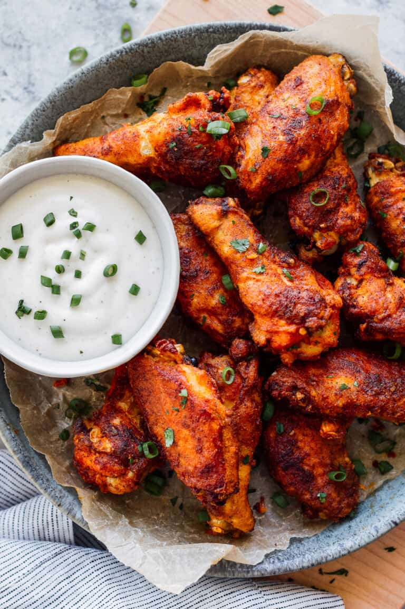

Chicken Wings

This easy Chicken Wings recipe is a healthier and more flavorful way to cook your favorite appetizer recipe because they're baked instead of fried! A simple seasoning rub creates the best flavor and gives these oven-baked wings the crispiest skin. Make plenty, because they'll go fast-especially if you're making them for game day parties.
Ingredients
- Chicken wings
- Flour
- Butter
- Paprika
- Garlic powder
- Salt
- Pepper
Steps
- Preheat oven to 425 degrees.
- Line a baking sheet with foil. Dot the foil with the butter, there is no need to melt it ahead of time but you can if you would like.
- In a medium sized bowl, combine flour, paprika, garlic powder, and salt and pepper.
- Coat both sides of each wing fully in the flour mixture and place on the baking sheet. Make sure the butter pieces are evenly spaced out among the wings.
- Bake wings for 30 minutes. Turn wings over and bake for an additional 15 more minutes or until crispy and fully cooked.
- Serve with your favorite dipping sauce and sprinkle with fresh parsley if desired.